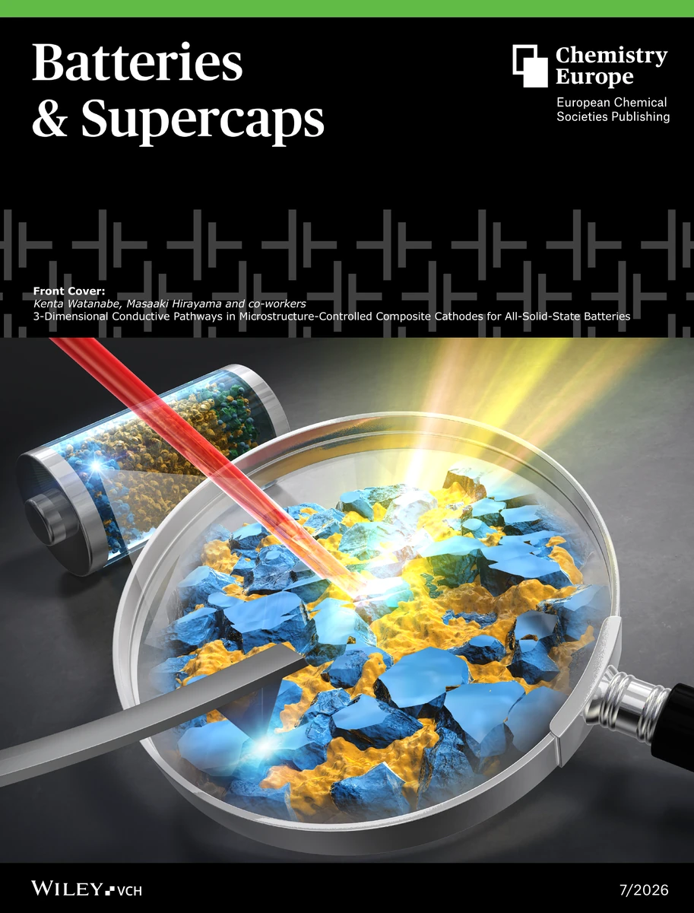
2026 · 表紙（Front cover）
GALLERY
採択論文のカバーピクチャーと、研究に関する動画。
JOURNAL COVERS

2026 · 表紙（Front cover）
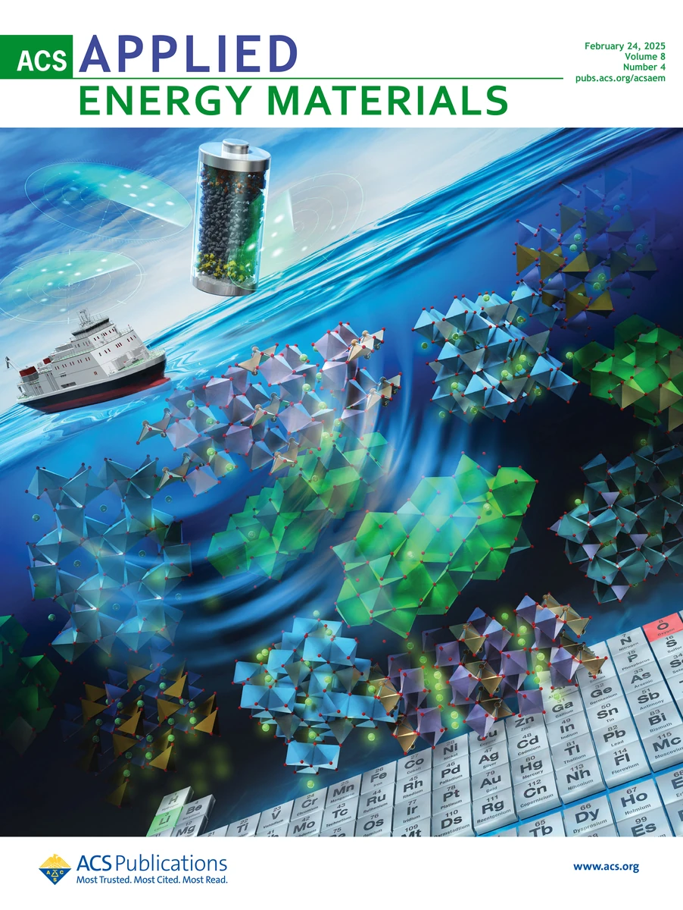
2025 · サプリメンタリーカバー
出典・著作権
K. Watanabe et al., ACS Applied Energy Materials 2025, 8, 2260.
© 2025 American Chemical Society.
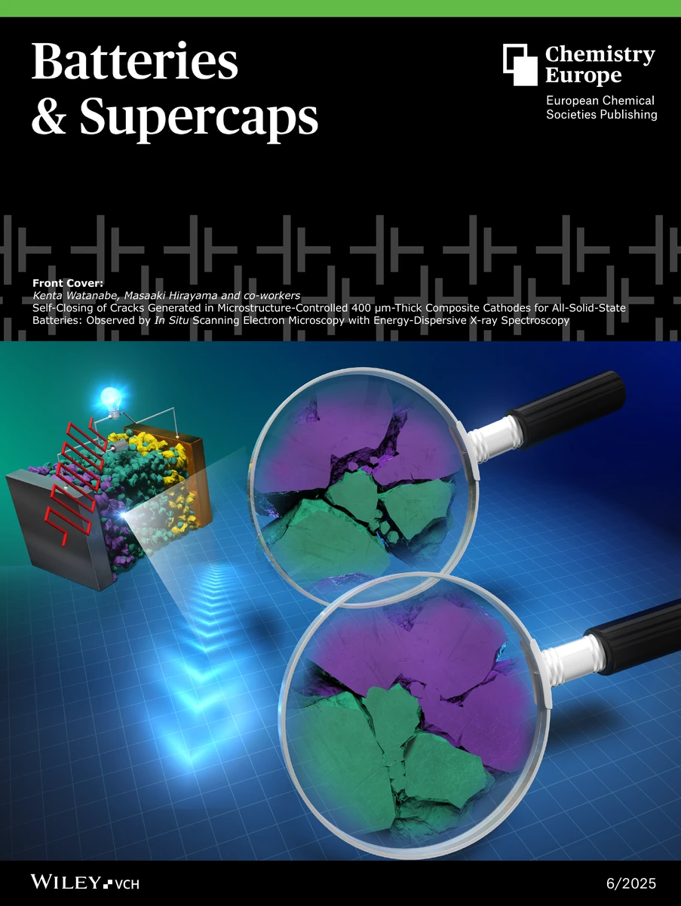
2025 · 表紙（Front cover）
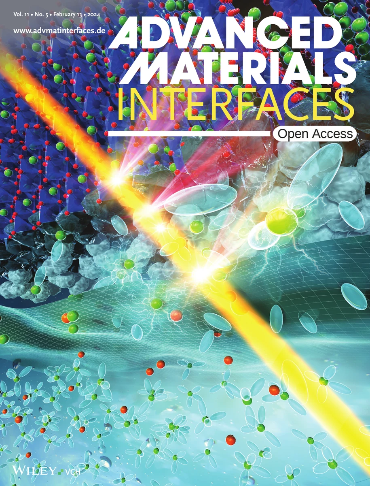
2024 · 表紙（Front cover）
出典・著作権
J. Nakayama et al., Advanced Materials Interfaces 2024, 11, 2470014.
© 2024 The Authors. Published by Wiley-VCH GmbH. Licensed under CC BY-NC 4.0.
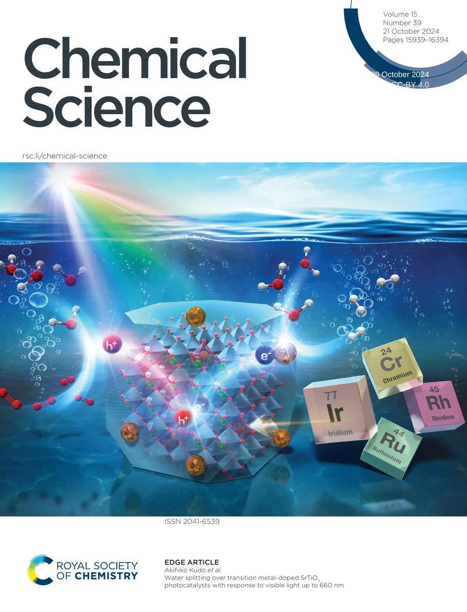
2024 · 表紙（Inside front cover）
出典・著作権
K. Watanabe et al., Chemical Science 2024, 15, 16025–16033.
© 2024 The Authors. Published by the Royal Society of Chemistry. Licensed under CC BY 4.0.
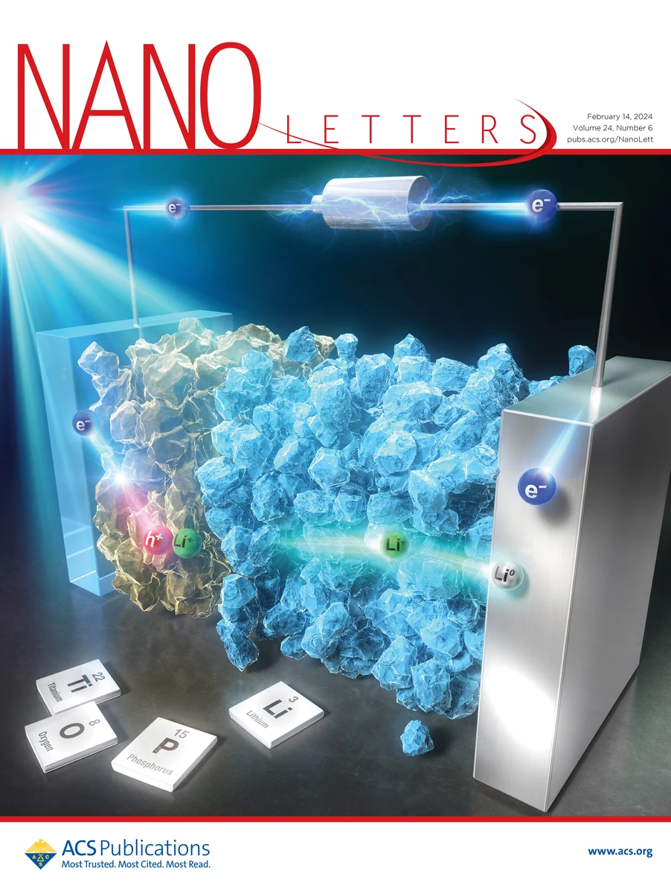
2024 · サプリメンタリーカバー
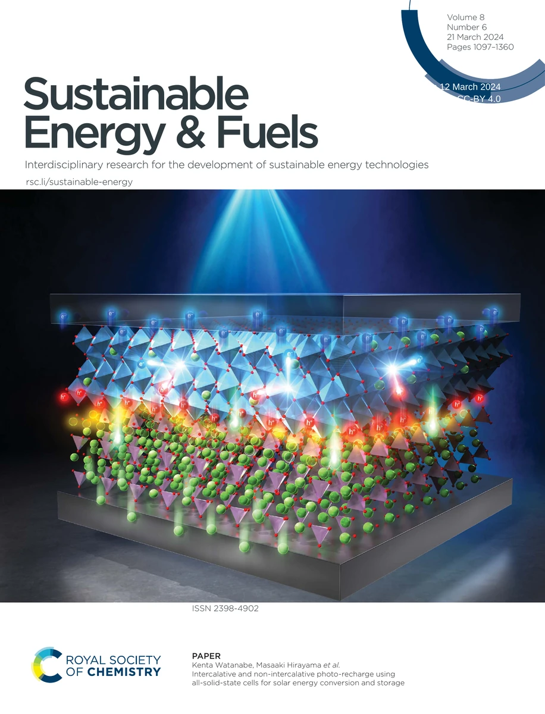
2024 · 表紙（Inside front cover）
出典・著作権
K. Watanabe et al., Sustainable Energy & Fuels 2024, 8, 1236–1244.
© 2024 The Authors. Published by the Royal Society of Chemistry. Licensed under CC BY 4.0.
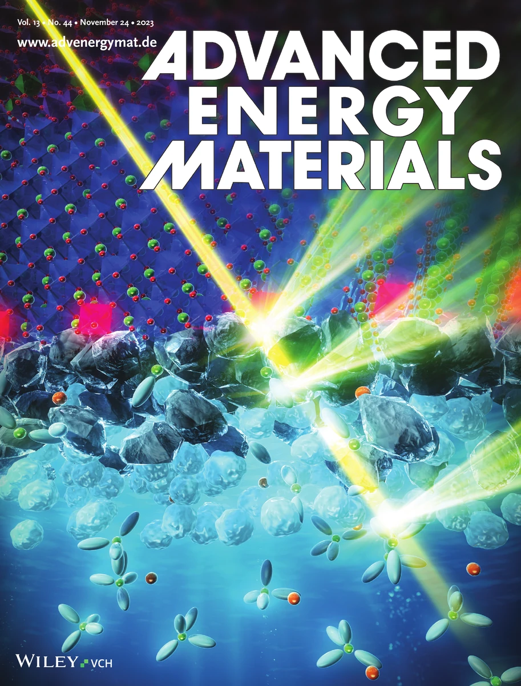
2023 · ジャーナルカバー
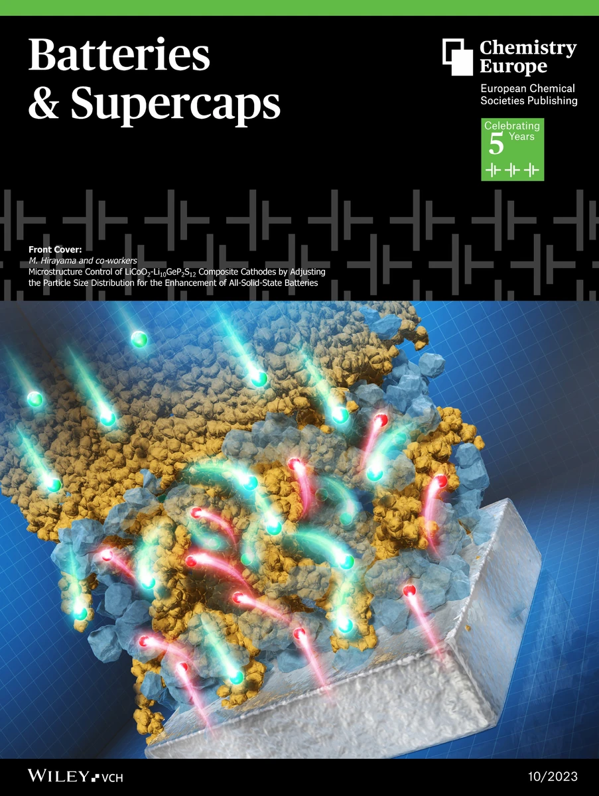
2023 · 表紙（Front cover）
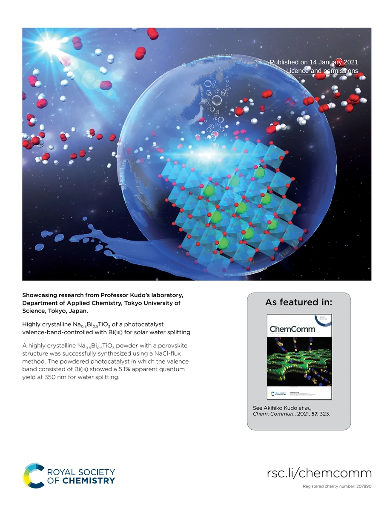
2021 · 裏表紙（Outside back cover）
出典・著作権
K. Watanabe et al., Chemical Communications 2021, 57, 323–326.
© 2021 Royal Society of Chemistry.
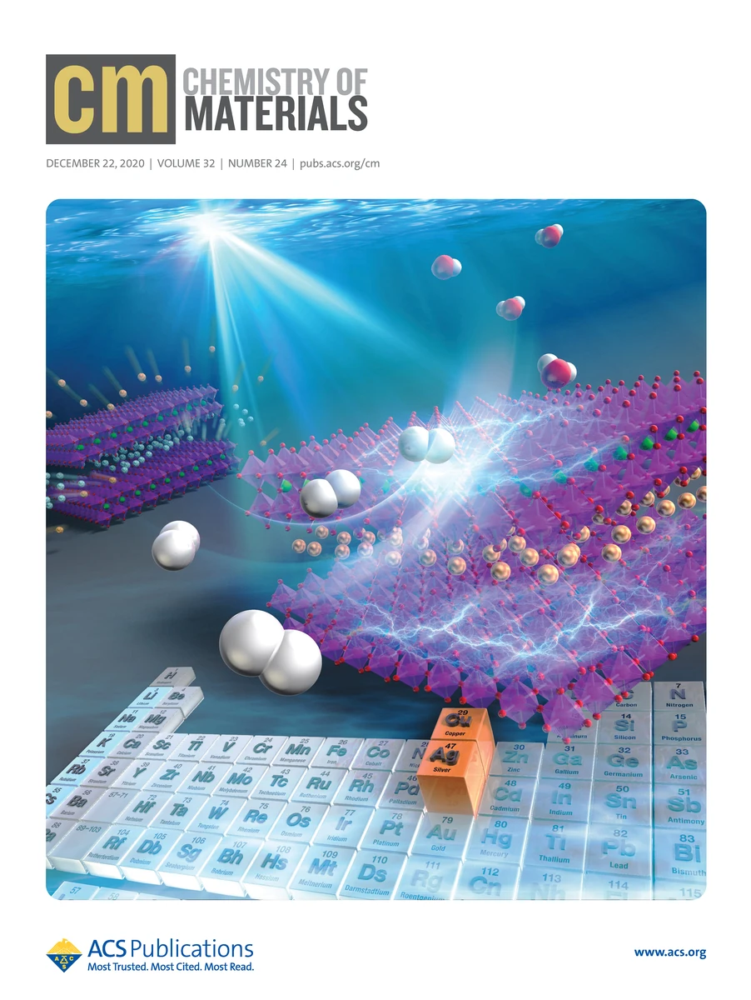
2020 · サプリメンタリーカバー
出典・著作権
K. Watanabe et al., Chemistry of Materials 2020, 32, 10524–10537.
© 2020 American Chemical Society.
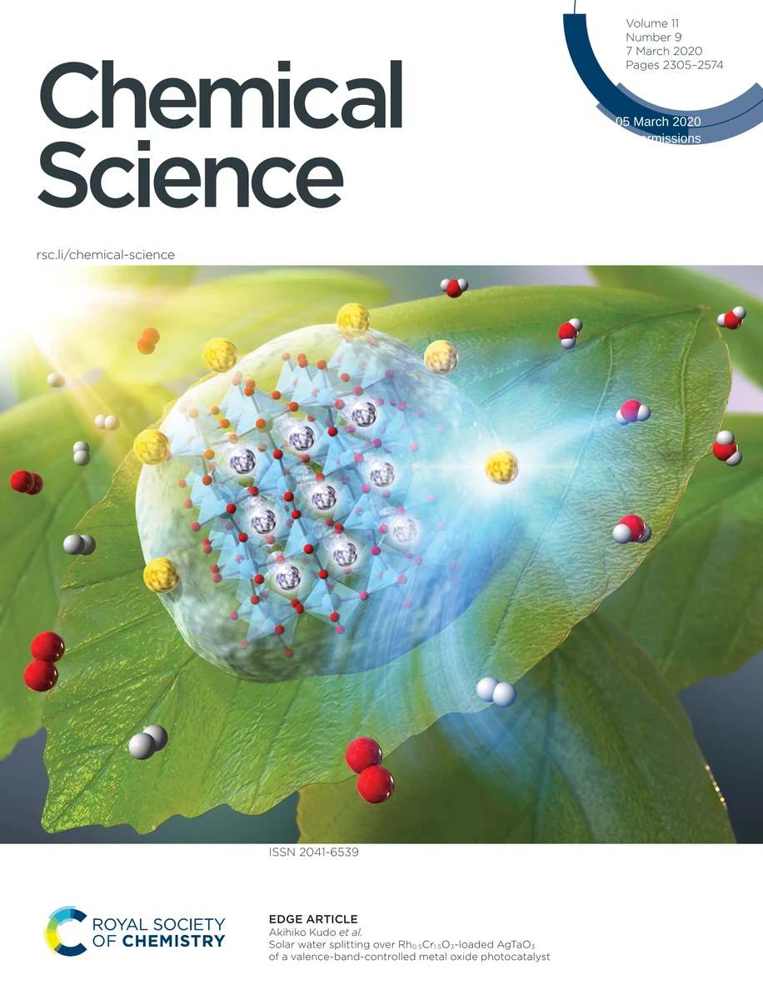
2020 · 表紙（Outside front cover）
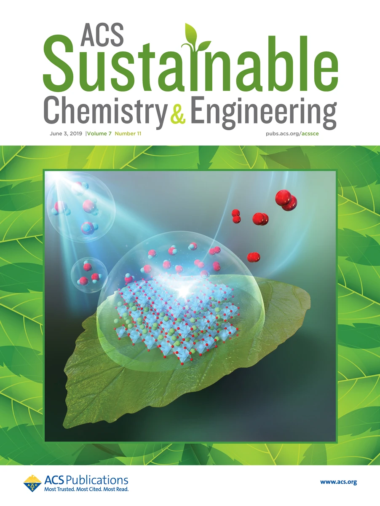
2019 · サプリメンタリーカバー
出典・著作権
K. Watanabe et al., ACS Sustainable Chemistry & Engineering 2019, 7, 9881–9887.
© 2019 American Chemical Society.
RESEARCH VIDEO
WATER SPLITTING
紫外光照射下における光触媒水分解の様子。
CONNECT
研究者情報・外部プロフィール